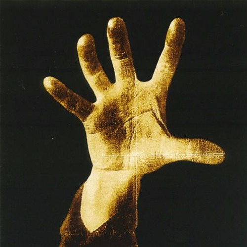

O nome “System of a Down” foi inspirado em um poema chamado “Victims of a Down” escrito pelo guitarrista Daron Malakian. Segundo Serj Tankian, vocalista da banda, o poema descrevia um buraco cheio de pessoas que não eram nada mais nada menos que a sociedade em que vivemos. Em entrevistas, Shavo Odadjian, baixista da banda, também explicou que o nome foi escolhido porque “System” era uma palavra mais forte e impactante do que “Down”, e que a banda queria que seus discos fossem arquivados alfabeticamente perto dos da banda Slayer, considerada “heróis musicais” pela banda. Além disso, a biografia da banda em Vagalume menciona que o nome “System of a Down” surgiu a partir do encontro acidental de Serj e Daron em um estúdio, onde cada um estava ensaiando com sua própria banda. Eles perceberam que tinham interesses musicais em comum e montaram a banda Soil, que posteriormente se transformou no System of a Down.
System of a Down surgiu em 1994 em Los Angeles, Califórnia. Serj Tankian e Daron Malakian se encontraram por acaso em um estúdio de gravação e, ao perceberem interesses musicais e ideológicos em comum, decidiram formar uma banda. Junto com o baixista Shavo Odadjian e o baterista Andy Khachaturian, começaram a trabalhar em suas primeiras músicas. Em 1997, Andy foi substituído por John Dolmayan, completando a formação clássica da banda.
O segundo álbum, "Toxicity", lançado em 2001, foi o grande marco na carreira da banda. Com faixas como "Chop Suey!", "Aerials" e a faixa-título "Toxicity", o álbum foi um sucesso comercial e de crítica. Ele alcançou o topo das paradas e solidificou a posição da banda no cenário musical global, sendo aclamado por sua criatividade e mensagens provocativas.

Em 2005, a banda lançou dois álbuns complementares: "Mezmerize" e "Hypnotize". Esses álbuns mostraram uma evolução na sonoridade da banda e trataram de temas variados, desde questões pessoais até críticas sociais e políticas. Ambos os álbuns foram bem recebidos e consolidaram ainda mais a posição da banda como uma das mais importantes do rock contemporâneo.
Após a formação, a banda começou a se destacar nos clubes de Los Angeles com suas performances enérgicas e inovadoras. Em 1998, lançaram seu álbum de estreia autointitulado, "System of a Down". O álbum foi bem recebido, principalmente no cenário do metal alternativo, e ajudou a banda a construir uma base de fãs sólida e leal.
Após o sucesso de "Toxicity", System of a Down continuou a desafiar as expectativas com "Steal This Album!" em 2002. Esse álbum trouxe uma coleção de músicas que não entraram nos trabalhos anteriores, mostrando a versatilidade e a ousadia da banda. O título do álbum foi uma referência ao ativista político Abbie Hoffman e reforçou o caráter contestador da banda.
Depois de lançar "Hypnotize", System of a Down entrou em um hiato em 2006, com os membros focando em projetos solo e outras atividades. Apesar do hiato, a influência da banda continuou forte, com uma base de fãs devota e novos ouvintes descobrindo sua música. Em 2010, a banda anunciou seu retorno, realizando turnês e se apresentando em festivais ao redor do mundo, mantendo viva sua relevância e impacto na música e na cultura pop.